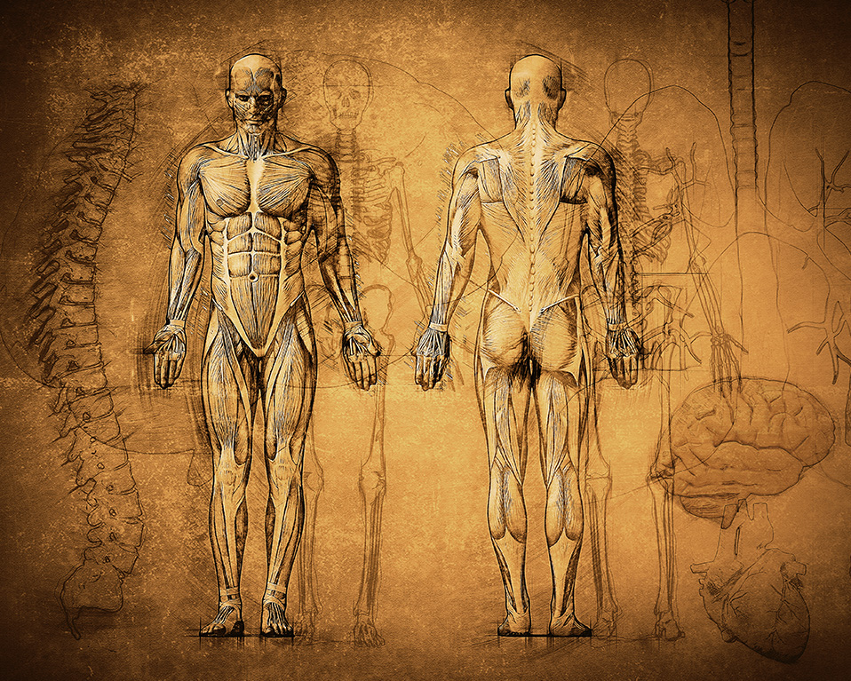

Quiz Cultura General
Legue of Legends Quiz
Geometry Dash Quiz
Brainrot Quiz
Anatomía Quiz
Quiz de Anatomía

Vas a poder escribir tus respuestas para luego enviarlas, la respuesta
tiene que estar escrita igual que la respuesta de la alternativa.
Pongamos a prueba tu nivel de cultura general!
1. ¿Qué estructura anatómica conecta la faringe con el oído medio?
- a) Trompa de Eustaquio
- b) Esófago
- c) Tráquea
- d) Laringe
2. ¿Cuál es el principal músculo encargado de la respiración normal en reposo?
- a) Intercostales
- b) Diafragma
- c) Trapecio
- d) Esternocleidomastoideo
3. ¿En qué parte del sistema nervioso central se encuentra el centro de control de la respiración?
- a) Cerebro
- b) Bulbo raquídeo
- c) Cerebelo
- d) Tálamo
4. ¿Qué estructura se encuentra en el interior del hueso temporal y
tiene un papel fundamental en la audición?
- a) Cavidad glenoidea
- b) Cóclea
- c) Fosa olfativa
- d) Conducto carotídeo
5. ¿Qué tipo de tejido forma la capa más externa de la piel?
- a) Tejido adiposo
- b) Epitelial
- c) Muscular
- d) Conectivo
6. ¿Qué músculo se considera el principal responsable de la flexión del codo?
- a) Tríceps braquial
- b) Bíceps braquial
- c) braquial
- d) Deltoides
7. ¿Cómo se llama la capa más profunda del tejido conectivo que envuelve a los músculos?
- a) Endomisio
- b) Epimisio
- c) Perimisio
- d) Fascia
8. ¿En qué parte del cuerpo se encuentra la glándula pineal?
- a) En el tálamo
- b) En el hipotálamo
- c) En el cerebro medio, cerca del cuerpo calloso
- d) En la corteza cerebral
9. ¿Qué hueso forma parte de la estructura de la órbita ocular?
- a) Nasal
- b) Frontal
- c) Parietal
- d) Esternón
10. ¿Cómo se llama la parte del sistema linfático que recoge la linfa de la parte
inferior del cuerpo y la lleva al torrente sanguíneo?
- a) Conducto torácico
- b) Conducto linfático
- c) Vena cava inferior
- d) Arteria subclavia
Siganme a mi cuenta de Youtube y
tambien a mi cuenta de Instagram y
por ultimo a mi cuenta de Twitch